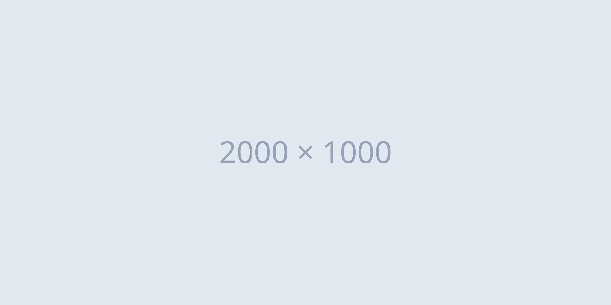

Mixed Use · 48 Storeys
Meridian Tower
Singapore · 20251.3521° N, 103.8198° E
Cultural · Three Halls
Harbor Arts Center
Providence · 202441.8240° N, 71.4128° W
Masterplan · 14 Hectares
Canal Quarter
London · Phase 1 202651.5072° N, 0.1276° W
The Practice
Buildings are public long before they are finished.
We design towers, halls, schools and whole districts from three studios — and stay until the city has moved in.
- 01 3 Studios — New York, London and Singapore
- 02 320 Architects, urbanists and engineers in one practice
- 03 6 Sectors, from cultural halls to infrastructure


Featured Project
Canal Quarter
Fourteen hectares of former rail yards, returned to London as homes, parks and a working canal edge.
- Site
- 14 ha
- Homes
- 1,800
- Parks
- 3
- Phase 1
- 2026
Explore Canal Quarter“They drew the streets before the buildings. That is why the quarter already feels like it has always been here.”
Our work, in four numbers.
As of September 2026
- 410 Buildings completed
- 28 Countries
- 52 International awards
- 68M Square feet designed

Sustainability
Net zero is the brief, not an option.
Two commitments, measured on every project and published every year.
Every new commission since 2024.
Target by 2030, against a 2020 baseline.
Recognition
Every award, shared with a client.
Selected, 2022–2025
- 2025
- 2025
- 2024
- 2024
- 2023
Studios
Three studios, one practice.
Every project draws on all three — one team, three time zones, one set of drawings.



Careers
34 open roles across three studios.
Architects, urban designers, computational designers and studio staff.
See Open Roles